Scenes from previous races. Hilarious, chaotic, and sometimes quietly profound.
← Back to the season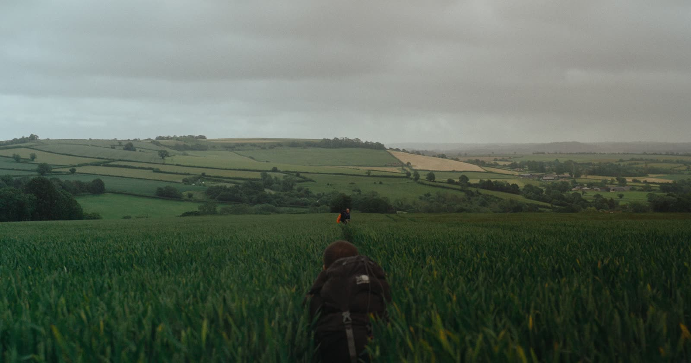
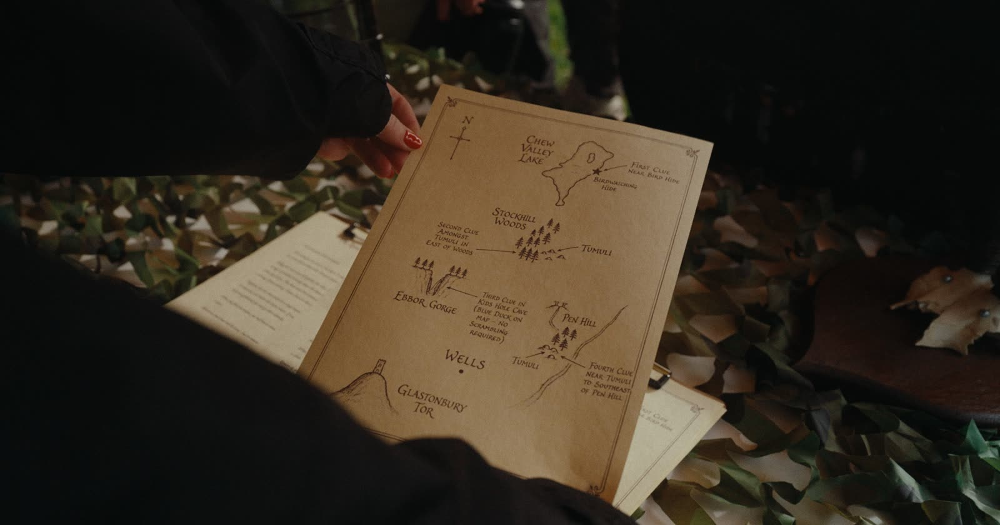
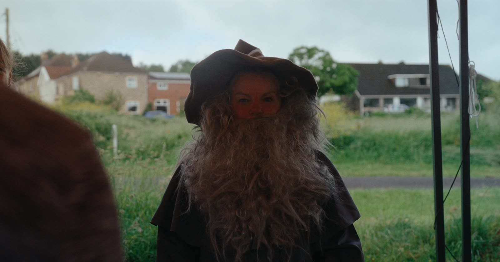
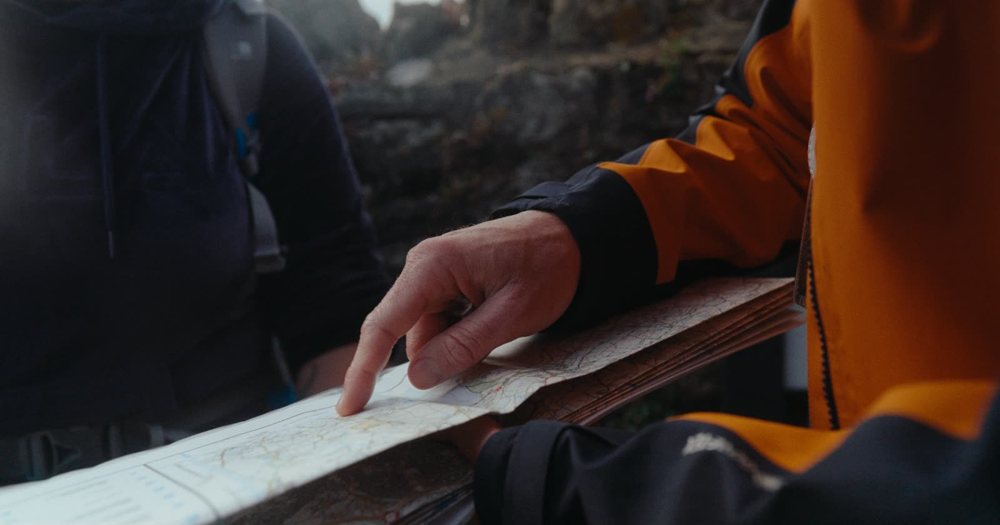
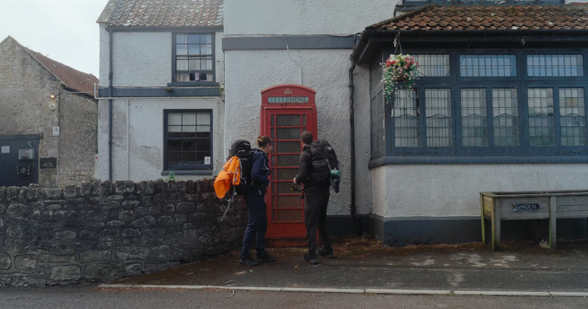
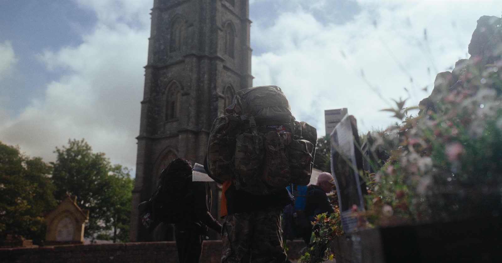
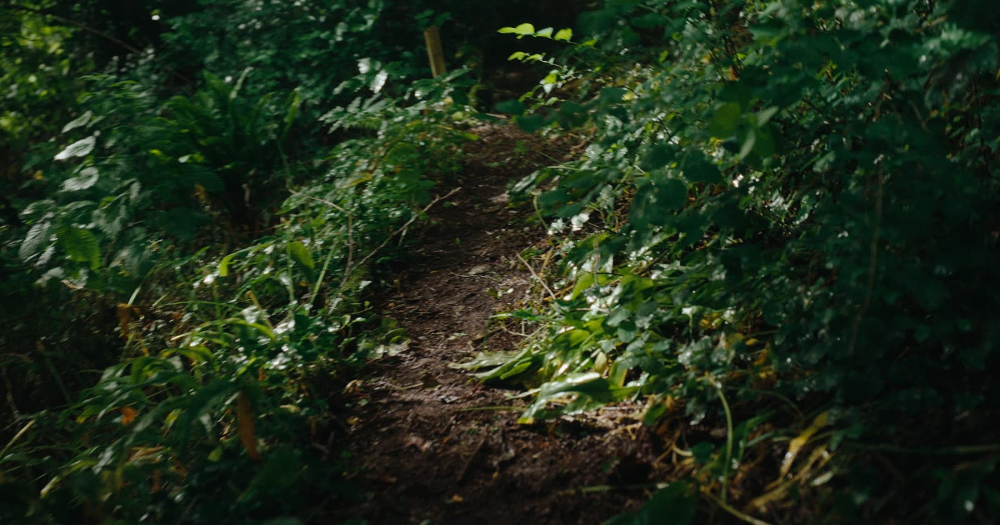
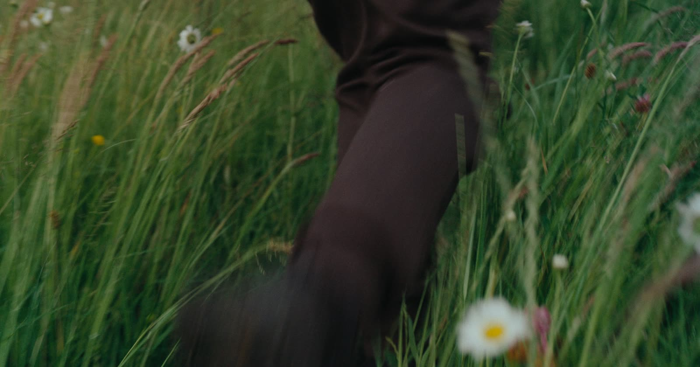
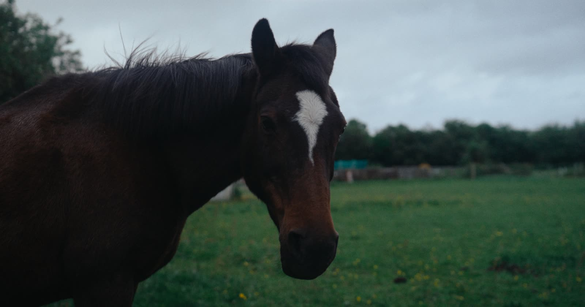
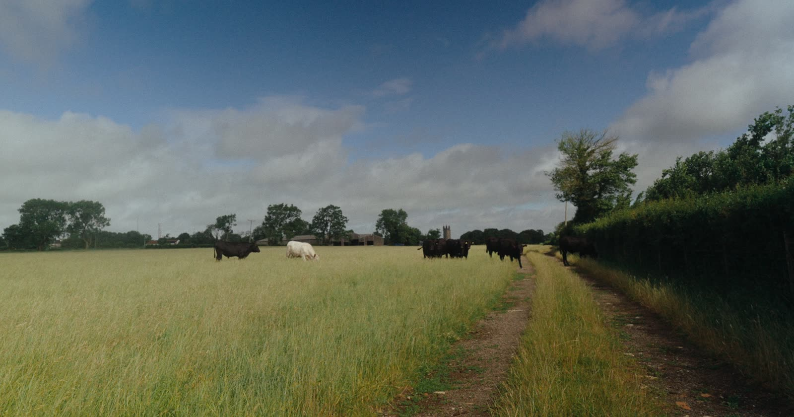
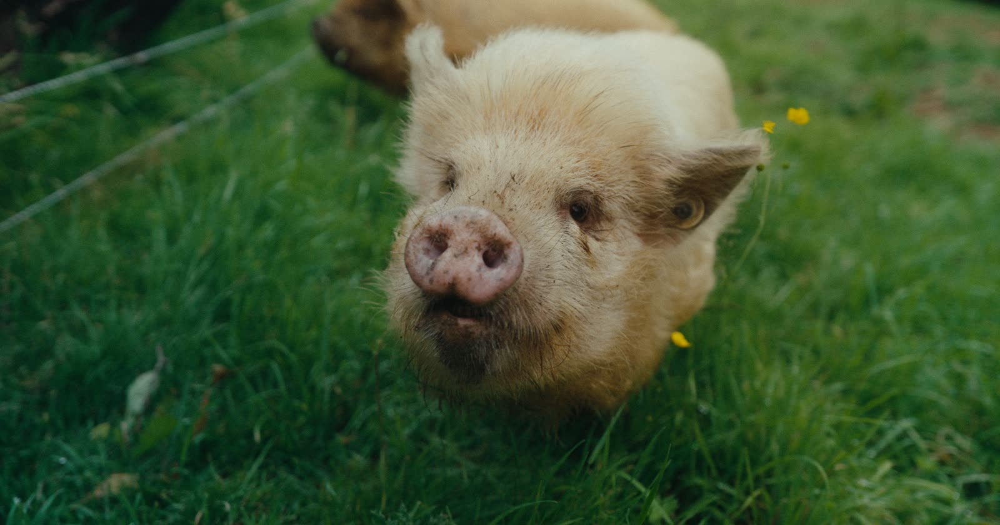
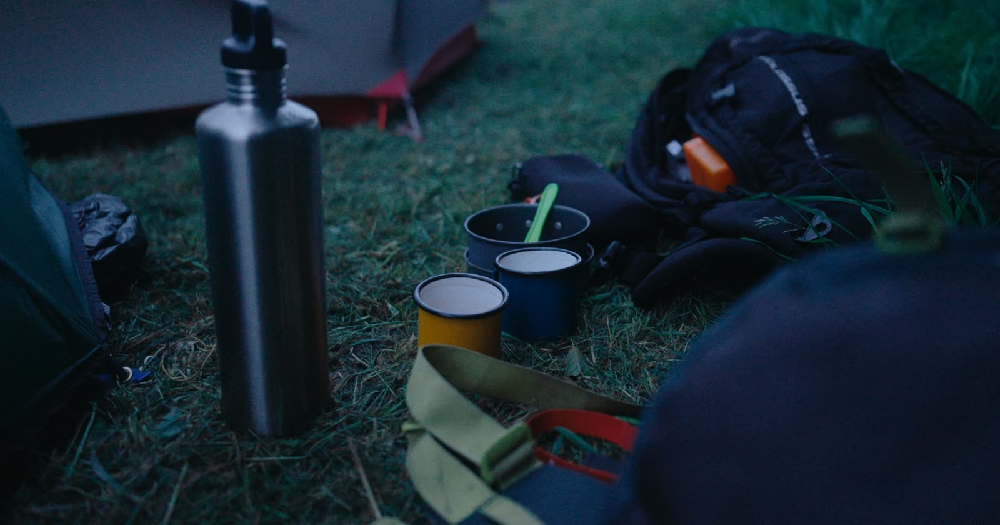
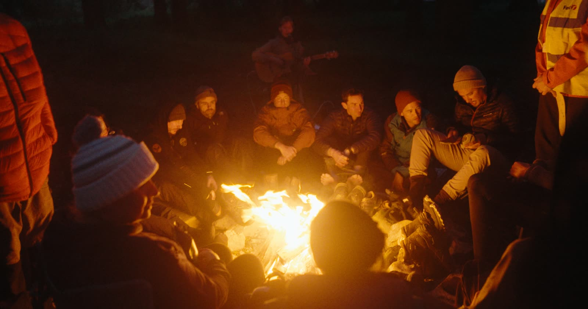
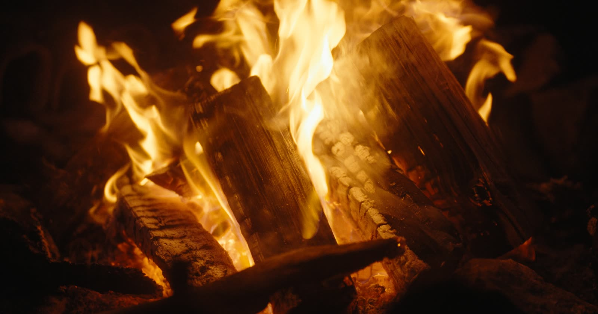
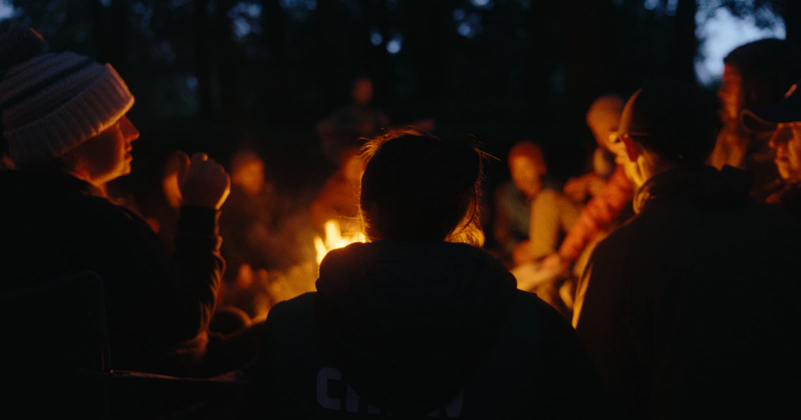
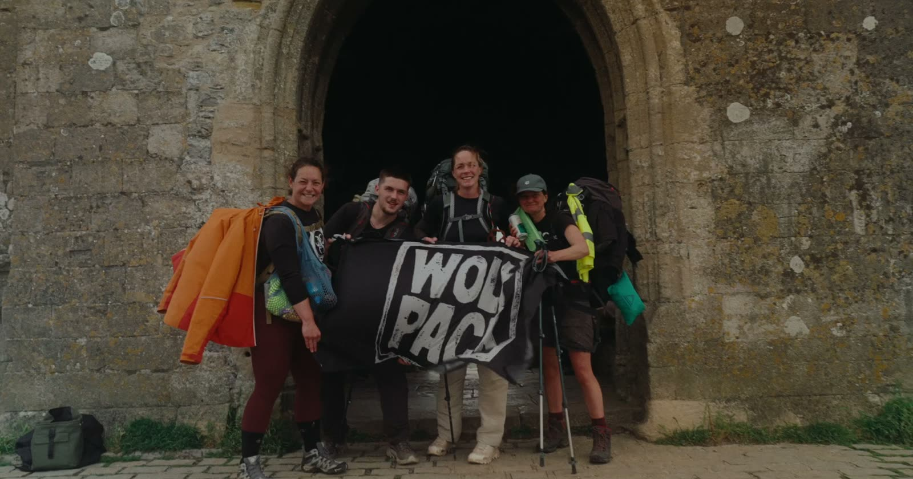
All photographs were taken on real races, by real participants, most of whom have fully recovered.
The horse, the pig and the wizard appear courtesy of themselves.